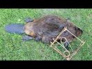
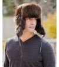
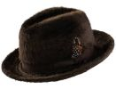
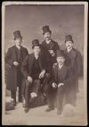
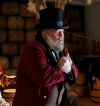
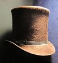
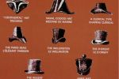

The Fur Trade
The fur trade was a major global industry that shaped exploration, colonization, and economic development from the 1500s through the 1800s. European demand for luxury furs, especially beaver pelts used to make fashionable felt hats, encouraged trade with Indigenous peoples and drove exploration across North America and Siberia.
Russia was an early leader in the fur trade, supplying Europe with valuable pelts before expanding into Siberia in search of animals such as sable and arctic fox. Russian interest in sea otter furs also led explorers across the Pacific to establish settlements in Alaska. In North America, French and English traders exchanged manufactured goods for furs with Native peoples, and the search for beaver pushed explorers and trappers deep into the continent.
Major companies controlled much of the trade, including the Hudson's Bay Company, the North West Company, and the American Fur Company founded by John Jacob Astor. After the Lewis and Clark Expedition, American “mountain men” explored the Rocky Mountains, trapping beaver and trading their pelts at annual rendezvous gatherings.
The fur trade transformed North America by encouraging exploration, settlement, and cultural exchange, but it also created conflicts and increased Indigenous dependence on European goods. By about 1840, over-trapping and changing European fashion reduced the industry's importance. Many former trappers later became guides for westward migration routes such as the Oregon Trail.
Beaver trappers, beavers, and beaver traps

Beaver fur hats popular in North America and Europe





